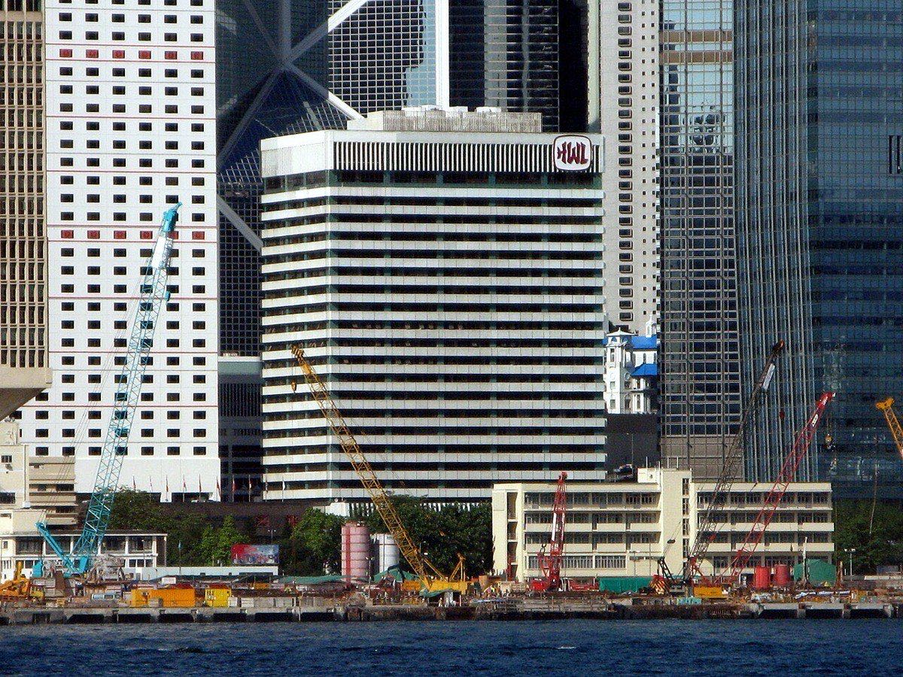
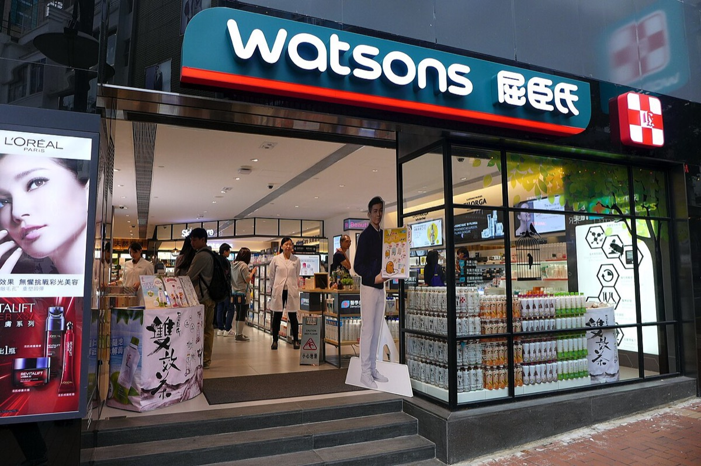
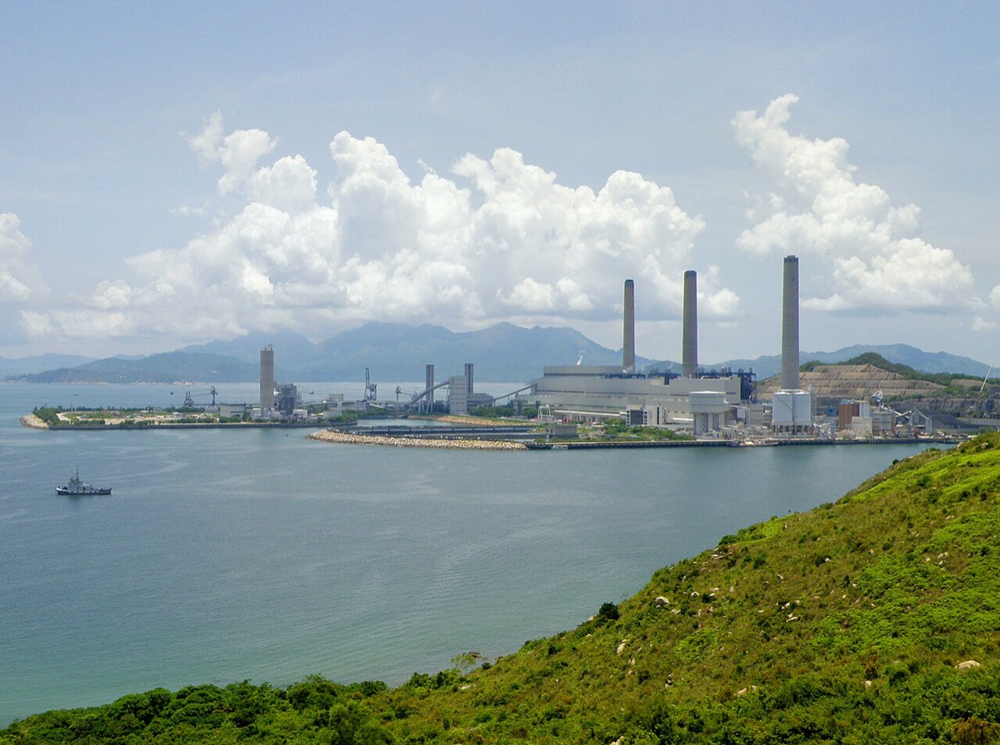

主張：李嘉誠は2015年1月の再編で、持ち株会社ディスカウントの解消により株主に価値を生むと説明した。再編は2015-06-03に完了した。完了後も CK Hutchison の市場評価は深いディスカウントを維持・拡大した。Deutsche Bank（2016-08）は NAV 対比約25%ディスカウントと書いた。Reuters Breakingviews（2023-12-20／報道・single-source）は発表以降の株主リターンを約−29%（ハンセン指数約−5%）と書く。同稿は簿価ディスカウントを約70%とし、2016年をパー（対簿価ディスカウント約0%）と対比する。本人が説明した結果（ディスカウント解消による価値創出）はこれらの市場指標では実現していない。 反証条件：再編発表以降の株主トータルリターンがハンセン指数を上回り、かつ簿価ディスカウントが2016年のパー水準（対簿価ディスカウント約0%）まで縮小したと監査可能な市場データで示される場合。または本人コメントにディスカウント解消による価値創出が無いと公式PDFで示される場合。 判定：支持（本人説明の結果予測に対し、市場指標は未達。ディスカウント拡大の因果経路の特定は判定不能）
④主張2の検証 — 2015年再編とディスカウント未解消2015 Reorg vs Market Discount

香港中環の和記大廈（Hutchison House、2009-06-20撮影）。2015年再編で非不動産は CK Hutchison Holdings へ移り、港湾・通信・小売・エネルギーが同一上場体に残った。主張2は、本人が説明したディスカウント解消が、この上場体の市場指標で実現したかを見る。写真：Wing1990hk／CC BY 3.0／Wikimedia Commons


左は香港の屈臣氏（Watsons）店舗（2015-10-11撮影、再編完了後）。右は南丫島の南丫発電所（2015-07-14撮影）。いずれも再編後に CK グループ系の非不動産側に残る事業の実体である。市場ディスカウントは、これらの事業を含む上場体の簿価・NAV に対して観測される。写真：Wing1990hk／CC BY 3.0；Exploringlife／CC BY-SA 4.0／Wikimedia Commons
2015-01-09、長江実業と和記黄埔は再編案を発表した。非不動産は CK Hutchison Holdings（ケイマン籍・香港上場）へ移す。不動産は別会社へ移す。公式PDFの李嘉誠コメントは、持ち株会社ディスカウントの解消により株主に価値を生むと見込む、と書く。ケイマン籍について本人は、香港上場企業の約75%がケイマン籍であり通例に従う、と説明した。再編は2015-06-03に完了した（完了公告）。1945
本人説明の結果予測は「ディスカウント解消による価値創出」である。完了後の市場指標はこの予測と食い違う。Deutsche Bank の証券レポート（2016-08）は CK Hutchison が NAV に対し約25%ディスカウントで取引されていると書いた（長期平均約21%との対比）。Reuters Breakingviews（2023-12-20／報道・single-source）は次を書く。再編発表以降の株主リターンは約−29%でハンセン指数の約−5%を下回る。時価総額約 US$200億（約2.8兆円）は簿価に対し約70%ディスカウントであり、同稿は2016年をパー（対簿価ディスカウント約0%）と対比する。China Daily（2016-01）は再編当時にアナリストがディスカウント解消を見込んでいたと報じる。方向は複数の二次ソースで一致する。−29%と70%の絶対値は Breakingviews 単独である。464748
1979年の和黄株約22.4%の対価約 HK$6.39億は、当時のレートで約280億円である。1979年の香港ドルは変動相場であり、共通の換算表に値が無い。このため Penn World Table の年平均1米ドル=5.00香港ドルと円ドルの年平均219.0円から、1香港ドル=約43.8円とした。今の物価では約460億円、大卒初任給の倍率2.4倍で見ると約670億円の重みである。この対価は1950年の創業資本 HK$5万の約1.3万倍である。1985年の香港電燈持分の対価約 HK$29億は、当時のレートで約890億円、今の物価で約1,200億円である。5165257
1999年の Orange 処分益と2000年以降の3G
1999年の Orange 処分益 HK$1,180億は、当時のレートで約1.7兆円、今の物価で約2.0兆円である。給料で見ると約2.3兆円の重みがあり、2025年の大卒初任給の12か月分で割ると約74万人分に当たる。2000年に取得した英国3G免許 £43.85億は約7,200億円であり、処分益の円額の約4割に当たる。3 Group の2004〜2009年の LBIT を各年のレートで円にすると合計約1.9兆円であり、処分益の円額約1.7兆円を約1,500億円上回る。香港ドルで比べた主張1の結論と、円で比べた結論は同じ向きである。912143952
当時のレートは、1949〜1971年が財務省の固定相場と英ポンド・香港ドルの固定比率、1980年代以降が FRED の年平均である。今の物価は、総務省の戦前基準消費者物価指数（東京都区部、持家の帰属家賃を除く総合）の2025年値を当時の値で割った倍率で換算した。給料で見た重みは、大卒相当初任給の2025年値262,300円を当時の値で割った倍率を掛けた値である。高度成長期に賃金が物価より速く上昇したため、1950年の倍率は物価で約9.5倍、賃金で約44倍と大きく異なる。2000年以降の金額は物価の差が2割以内のため当時の年平均レートだけで換算し、複数年の合算は各年のレートで円にしてから合計した。
出典
為替は財務省「外為法の変遷」と香港金融管理局の為替制度史による。年平均レートは FRED AEXJPUS・AEXUSUK・DEXHKUS と Penn World Table（FRED FXRATEHKA618NUPN）による。物価は総務省 消費者物価指数の戦前基準5大費目指数による。初任給は『値段史年表』と厚生労働省の統計による。URL は出典一覧の49〜57に置く。495051525354555657
⑨誰が得をするか / 残っている問い / 出典Winners / Open Questions / Sources
The Independent「Hutchison to put Rabbit back in hat」（1993。Rabbit閉鎖、引当 £122M） — https://www.independent.co.uk/news/business/hutchison-to-put-rabbit-back-in-hat-portable-phone-service-to-close-but-hong-kong-company-will-launch-new-network-1502327.html
SCMP「$175m for Orange promotion」（1994-05-01。Rabbit失敗約 HK$1.4B） — https://www.scmp.com/article/72420/175m-orange-promotion
CK Hutchison / CKI プレス（2004-08-31。Northern Gas Networks £1.393B） — https://www.ckh.com.hk/en/media/press_each.php?id=1497
CK Hutchison / Cheung Kong 再編プレス PDF（2015-01-09） — https://www.ckh.com.hk/upload/attachments/en/pr/p150109.pdf
CKI「Completed Acquisition of UK electricity distribution」（2010-11-01。£5.775B） — https://cki.com.hk/english/whatsNew/2010/20101101_1.htm
SCMP「Attack on Li Ka-shing ignores ills of business environment」（2015-09-20。瞭望智庫論評の要約） — https://www.scmp.com/news/article/1859851/attack-li-ka-shing-ignores-ills-business-environment
CKI 公告・完了発表（2011。Northumbrian Water 株式約 £2,411.6M） — https://www.cki.com.hk/english/PDF_file/announcement/2011/20110802_1.pdf
CK Hutchison / BlackRock–TiL 共同発表要旨（2025-03-04） — https://www.irasia.com/listco/hk/ckh/press/p250304.htm
Reuters「CK Hutchison's shares drop after China posts critical commentary」（2025-03-14） — https://www.reuters.com/business/ck-hutchisons-shares-drop-after-china-posts-critical-commentary-port-sale-us-2025-03-14/
New Scientist「Telephone big guns kill off Rabbit」 — https://www.newscientist.com/article/1830735-telephone-big-guns-kill-off-rabit/
Rewheel 応答 PDF。Three UK 累積営業損失約 £5.5B（〜2011）・二次推計 — http://static1.1.sqspcdn.com/static/f/1321365/22951143/1371744727553/Rewheel+response+2.2.pdf
Li Ka Shing Foundation「Shantou University」（拠出 HK$12B） — https://www.lksf.org/initiative-project/shantou-university/
Xinhua「Hong Kong tycoon Li Ka-shing announces retirement」（2018-03-16） — http://www.xinhuanet.com/english/2018-03/16/c_137043985.htm
Reuters「BlackRock-backed group seeks to close CK Hutchison ports deal without Panama assets」（2026-03-03） — https://www.reuters.com/world/americas/blackrock-backed-group-seeks-close-ck-hutchison-ports-deal-without-panama-assets-2026-03-03/
The Straits Times「Li Ka-shing keeps $28.9b ask for ports despite Panama loss」（2026。US$22.8B 維持の交渉） — https://www.straitstimes.com/business/li-ka-shing-keeps-28-9b-ask-for-ports-despite-panama-loss
SCMP「Good year for Hong Kong's property billionaires」（2013-01-10。Forbes香港リスト推定 US$30B） — https://www.scmp.com/news/hong-kong/article/1124676/good-year-hong-kongs-billionaires
Caixin「Li Ka-Shing Tops Hong Kong Rich List With $45 Billion Fortune」（2026-02-13。推定 US$45.1B） — https://www.caixinglobal.com/2026-02-13/li-ka-shing-tops-hong-kong-rich-list-with-45-billion-fortune-102414357.html
BBC「Li Ka-shing’s Hutchison finally sees 3G profits」（2011-03-29。累積損失 HK$158bn） — https://www.bbc.co.uk/news/business-12878144
CorCom「Volano gli utili di Hutchison Whampoa」（2011。累積損失 158 miliardi HK$） — https://www.corrierecomunicazioni.it/telco/volano-gli-utili-di-hutchison-whampoa-il-3g-finalmente-in-attivo/
MLex「China to review CK Hutchison-BlackRock port deal: SAMR publication」（2025-03-28） — https://www.mlex.com/mlex/articles/2317205/china-to-review-ck-hutchison-blackrock-port-deal-samr-publication
Hutchison Whampoa 2009年度結果発表 PDF（3 Group LBIT HK$5,281M、免許償却減） — https://www.ckh.com.hk/upload/attachments/en/pr/2176_eng.pdf
SCMP「Orange stake sale to Mannesmann for $113b to benefit all, says Hutchison」（1999-10-22。李嘉誠会長の発言「we have not got rid of Orange…」） — https://www.scmp.com/article/297371/orange-stake-sale-mannesmann-113b-benefit-all-says-hutchison
Deutsche Bank「CK Hutchison Alert」（2016-08。NAV 対比約25%ディスカウント、長期平均約21%。証券レポート） — http://pdf.dfcfw.com/pdf/H3_AP201608170017138439_1.pdf
Reuters Breakingviews「The Li clan will deal their way out of value trap」（2023-12-20。発表以降リターン約−29%、HSI 約−5%、簿価ディスカウント約70%。2016年はパー＝対簿価約0%。報道・single-source） — https://www.reuters.com/breakingviews/li-clan-will-deal-their-way-out-value-trap-2023-12-20/
China Daily「Mighty Li takes stock of empire」（2016-01-08。再編当時のディスカウント解消期待の報道） — https://www.chinadaily.com.cn/hkedition/2016-01/08/content_22990986.htm
FRED AEXJPUS / AEXUSUK / DEXHKUS（円ドル・ドルポンド・香港ドルの年平均） — https://fred.stlouisfed.org/series/AEXJPUS https://fred.stlouisfed.org/series/AEXUSUK https://fred.stlouisfed.org/series/DEXHKUS
香港金融管理局「History of Hong Kong's Exchange Rate System」（1ポンド=16香港ドル、1983年の連動制） — https://www.hkma.gov.hk/eng/key-functions/money/history-of-hong-kongs-exchange-rate-system/
FRED「Exchange Rate to U.S. Dollar for Hong Kong SAR」FXRATEHKA618NUPN（Penn World Table。1979年平均1米ドル=5.0027香港ドル） — https://fred.stlouisfed.org/series/FXRATEHKA618NUPN


.png){kind=link}